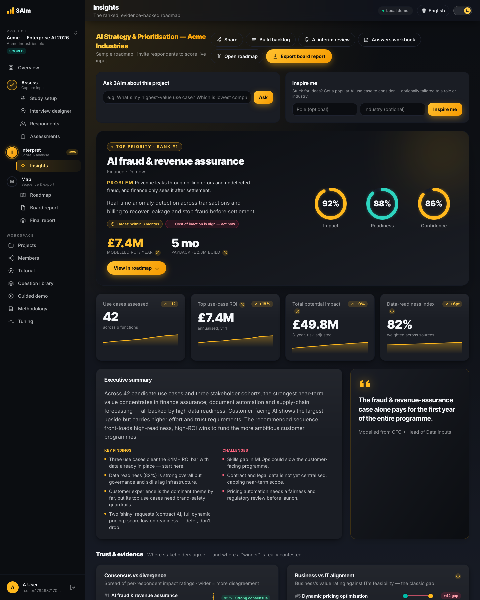
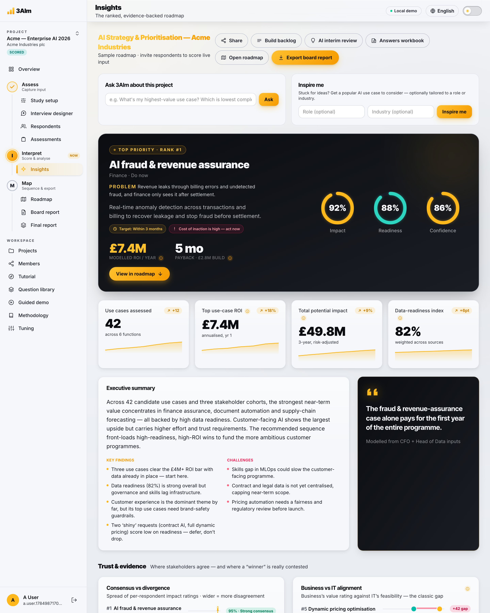
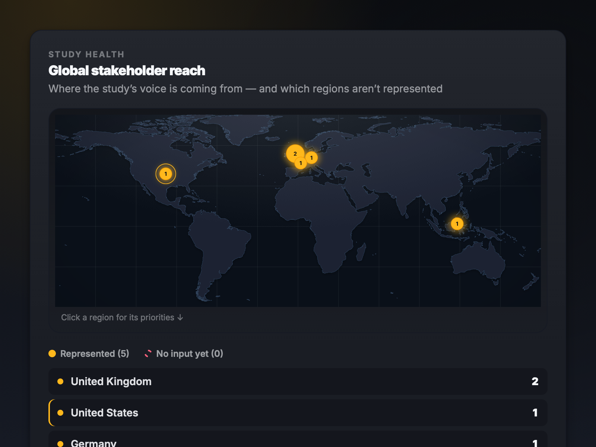

Stop guessing which projects to fund.
3AIm turns interviews, data and opinions into a ranked, evidence-backed priority roadmap — so you back the use cases that actually pay back. Built AI-first, and just as decisive on any initiative portfolio.
Ranked priority roadmap
Live signals- 1 Demand forecast £5.1M
- 4 Invoice triage £7.4M
- 2 Contract search £2.6M
- 3 Support copilot £3.8M
- 5 Visual QC £1.9M
One discovery sprint with Acme Industries surfaced and ranked 42 AI use cases. The evidence — not opinion — pointed to where the money is.
- JMRKASTPLB …
Stakeholders heard
- 42
42 use cases surfaced
- 4.23.14.8
Blind-scored on evidence
-
Ranked by the money
£49.8M
ranked opportunity
3-year, risk-adjusted
£7.4M
top use-case ROI
annualised, year one
4.5 mo
fastest payback
on the lead use case
3.4×
net return
over three years, after build cost
Figures from a modelled sample engagement. Every number expands into its evidence, assumptions and confidence score in the live tool.
Three inputs in.
The raw material of every strategy decision — captured cleanly, weighted fairly.
Interviews
AI-guided conversations with stakeholders across business and IT — capturing use cases, expected impact and feasibility without weeks of workshops.
Data
Operational and financial signals, plus a structured data-readiness assessment on every use case — so scores rest on evidence, not assumptions.
Opinions
Strategic goals and constraints — captured from every stakeholder and weighted equally, so the loudest voice no longer wins by default.
Take AIM.
Three AI-driven actions take you from the chaos of discovery to a clear, defensible roadmap — and a board-ready PDF.
- ALocked
Assess
Step 01 · Capture input
- ILocked
Interpret
Step 02 · Score & analyse
- MLocked
Map
Step 03 · Sequence & export
- AI Priority Report123Ready in minutes
Board-ready PDF
Glass-box evidence · confidence-scored
The whole picture — and the working behind it.
From first interview to a board-ready roadmap in days, not a quarter. Every score expands into its evidence, assumptions and a confidence score.



Global stakeholder reach
See which regions you've heard from — and which you haven't
Command dashboard
Every signal, scored and ranked at a glance

The AI interviewer
A live, glass-box discovery conversation — in nine languages
Explainable. Bias-controlled. Sovereign.
The three things a black-box prioritiser can’t give you.
Explainable
Glass-box scoring — every rank expands into its evidence, assumptions, risks and confidence. Defensible to the most sceptical CFO.
Bias-controlled
Independent, blind scoring before discussion, aggregated with equal weight — seniority and volume carry no hidden advantage, so the result reflects evidence, not the loudest voice.
Sovereign
Model-agnostic, with no vendor lock-in, and every study is isolated. Your inputs never train shared models, and we'll show you exactly where your data lives.
Proof you can poke
A static deck can't do either of these. Your roadmap re-scores as evidence lands — and the loudest voice in the room can't move it.
Bias controlled
Locked by evidenceThe loudest voice
Volume up. Ranking unchanged. Blind scoring means evidence wins — not the loudest voice.
A living roadmap
Live- 1 Invoice triage 8.2 ± 0.8
- 2 Demand forecast 8.0 ± 1.3
- 3 Support copilot 7.3 ± 1.1
- 4 Contract search 6.6 ± 1.5
A priority map you can actually defend.
Most tools hand you a black-box score and a static PDF. 3AIm shows its working — and keeps it alive.
Glass-box scoring
Every score expands into its evidence, assumptions, risks and confidence. Defensible to the most sceptical CFO.
A living roadmap
Not a one-off PDF. The roadmap re-scores as interviews, data and strategy change — the PDF is just a snapshot.
Prioritise → Build
Every ranked use case exports with its full working — scores, drivers, assumptions and evidence — as a multi-sheet workbook or CSV, ready for delivery planning.
Bias controlled
Independent, blind scoring before discussion, aggregated with equal weight — the result reflects evidence, not hierarchy.
Risks surfaced, not buried
Every high-ranked use case carries its own honest risks, gaps and dependencies — shown next to the score, not hidden in an appendix.
Data sovereignty
Model-agnostic and isolated per study on UK-managed infrastructure. Your inputs never train shared models — and if you have residency or sovereignty requirements, talk to us.
Frequently asked questions
Straight answers to the questions strategy leads ask before they trust a prioritiser.
No. 3AIm is built AI-first — an AI-guided interviewer, data-readiness scoring and model-risk checks — but the engine ranks any initiative portfolio: digital, operations, product, compliance or an entire transformation programme. If it competes for budget, 3AIm can rank it.
The numbers are deterministic and glass-box. Every stakeholder's input is aggregated blind with equal weight, and every score expands into its evidence, assumptions and a confidence score. AI writes the narrative — it never invents the numbers.
Days, not quarters — and we measure it. Stakeholders answer in about 20 minutes each, the roadmap re-scores live with every submission, and your dashboard shows the actual day count from kick-off to roadmap.
Ten to thirty respondents gives a strong signal — and there are no caps on respondents or use cases. For the best results, involve line-of-business, IT and other support functions together: the wider the mix, the sharper the priorities. A coverage heatmap flags whose voice is missing before you trust the result.
A private link — no account needed. They talk it through with the AI interviewer (or use a structured form) in around 20 minutes, review exactly what was captured, then submit. Available in nine languages, including right-to-left Arabic.
A living dashboard, a board-grade PDF report and a complete answers workbook — the same numbers in every view. New responses re-score the roadmap instead of dating it.
Your study stays yours: 3AIm is a secure cloud service, hosted on UK-managed infrastructure we own and operate, isolated per study and model-agnostic by design. Your inputs never train shared models, sign-in is passwordless passkeys, and every respondent link is private and revocable at any time. If your organisation has specific residency or sovereignty requirements, talk to us — we'll walk you through exactly where every byte lives.
See your AI roadmap in a day, not a quarter.
Book a demo and we’ll turn a real discovery brief into a ranked, evidence-backed priority map.